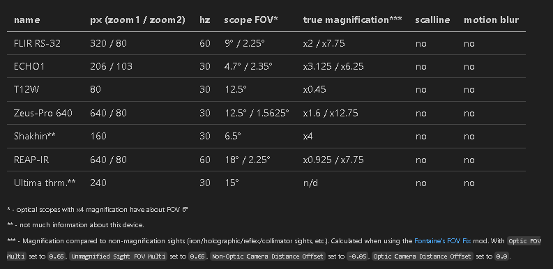

Realistic Thermal Scopes
- Downloads
- 58,692
- Favourites
- 51
- Mod lists
- 128
Re upload Realistic Thermal Scopes mod for SPT 3.11.
used Unity Assets Bundle Extractor Avalonia, because others programs had issue.
Less pixeled version v2.0.0 - check Addon Tab.
v1.4.0 table (it may look weird - not my fault, Forge fault).
| name | px (zoom1 / zoom2) | hz | scope FOV* | true magnification*** | scalline | motion blur |
|---|---|---|---|---|---|---|
| FLIR RS-32 | 320 / 80 | 60 | 9° / 2.25° | x2 / x7.75 | no | no |
| ECHO1 | 206 / 103 | 30 | 4.7° / 2.35° | x3.125 / x6.25 | no | no |
| T12W | 80 | 30 | 12.5° | x0.45 | no | no |
| Zeus-Pro 640 | 640 / 80 | 30 | 12.5° / 1.5625° | x1.6 / x12.75 | no | no |
| Shakhin** | 160 | 30 | 6.5° | x4 | no | no |
| REAP-IR | 640 / 80 | 60 | 18° / 2.25° | x0.925 / x7.75 | no | no |
| Ultima thrm.** | 240 | 30 | 15° | n/d | no | no |
* - optical scopes with x4 magnification have about FOV 6°
** - not much information about this device.
*** - Magnification compared to non-magnification sights (iron/holographic/reflex/collimator sights, etc.). Calculated when using the Fontaine’s FOV Fix v3.1.x mod. With Optic FOV Multi set to 0.65, Unmagnified Sight FOV Multi set to 0.65, Non-Optic Camera Distance Offset set to -0.05, Optic Camera Distance Offset set to 0.0.

Version
2.0.0
SPT 4.0.0 release
Version
1.4.0
Change FOV for thermals scopes based from product specifications found on the internet. Zoom adjusted.
If you don’t like these changes v1.3.2 is still available.
FLIR RS-32 = x2.25, 9°, 320px | x9, 2.25°, 80px
ECHO1 = x1, 4.7°, 206px | x2, 2.35°, 103px
T12W = 12.5°, 80px
Zeus-Pro 640 = x2, 12.5°, 640px | x16, 1.5625°, 80px
Shakhin = x3.7, 6.5°, 160px
REAP-IR = x1.2, 18°, 640px | x9.6, 2.25°, 80px
Ultima thrm. = 15° 240px